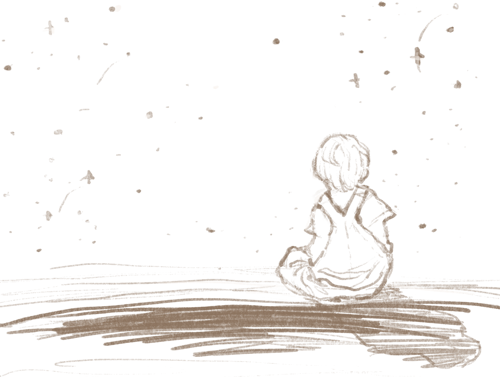

home
The Story Collector
The Mushroom House
The Fairy
The Monster
The Kingdom of Stars
The Time Loop
 



Welcome to the universe of stories. Explore around. Each constellation has their own story.
As a child, I’ve always been fascinated by the night sky. I’d wonder about the creatures that live there. I’d wonder if they are so big that to them we are simply a speckle of dust in their closet. I’d wonder if they’re actually not humongous but just really really far away, so far that to them we are also a speckle in the sky. I wonder if they’re lonely like me, wandering around a barren land, or if they have companions, like the ants I see crawling around their hills.
A long time ago, so long that I don’t know if it is myth or reality, or if it was a combination of both that grew from being passed down from mothers to daughters after generations and generations, there were more creatures like us on this planet. These creatures loved, and laughed, and went on adventures together. They also fought, both for and against each other, and built beautiful and terrible things. They explored and understood their world and that of the stars, and told stories until their understanding of their world could no longer prevent the destruction that followed. Only a few were left afterwards, and, of those few, they kept the tradition of storytelling on, hoping that, one day, we could return to claim the world and the stories that we told.
Some of these stories talk about a world that is long gone, others speak of worlds that couldn't have existed, but my favorite ones are stories that tell of the stars. I loved thinking about these places that exist so differently from mine, about the creatures that inhabit these worlds, and the worlds they inhabit. When I was younger, mother and I would tell these stories together, building and carving out worlds and imagining the lives of creatures so close yet so far from us.
But now it’s just me, with the stars for company, and it’s up to me to tell their stories.
Insert story of mushroom house here
Insert story of Florence & Her Adventures to the Human Realm here
Insert story of Halpie here
Insert story of the shiny king and queen here
Insert story of Gizem & her space loop here